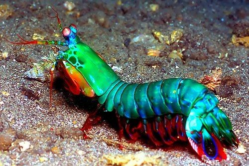
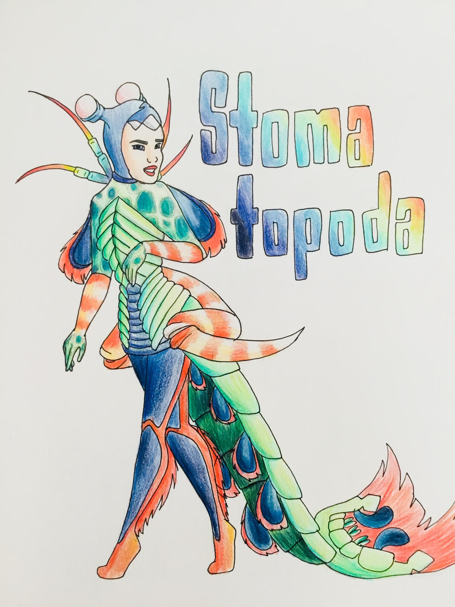

Fatos sobre o Stomatopoda
Descrição
Stomatopoda(Odontodactylus scyllarus), ou lacraia-do-mar para os mais íntimos, é uma ordem de crustáceos marinhos que agrupa cerca de 400 espécies, caracterizadas principalmente pela morfologia da segunda pata torácica, que é modificada em apêndice subquelado, lembrando uma pata de louva-a-deus.

| Classificação Científica | |
|---|---|
| Reino: | Animalia
|
| Filo: | Arthropoda
|
| Subfilo: | Crustacea
|
| Classe: | Malacostraca
|
| Subclasse: | Hoplocarida
|
| Ordem: | Stomatopoda
|
Curiosidades:
1- Visão
Tratando-se da visualização de cores, nós seres humanos possuímos três receptores de cor: azul, verde e vermelho. No entanto, os animais possuem uma quantia diferente das nossas, como por exemplo os cachorros que possuem apenas dois: verde e azul ou as borboletas que possuem cinco deles!
Porém, a história é um pouco diferente para a nossa querida lacraia-do-mar... Elas possuem dezesseis. Sim, isso mesmo que você leu, DEZESSEIS. Para você ter uma noção do quão incrível isso é, pense da seguinte maneira: Como possuímos apenas três receptores então toda vez que vemos um arco-íris estamos visualizando apenas variações do verde, vermelho e azul. Então tente imaginar um arco-íris comm dezesseis cores diferentes. Difícil, né? Enquanto vemos um arco-íris nosso amigo Stomatopoda enxerga uma verdadeira Explosão termonuclear de beleza e luminosidade!
2- Um animal da paz?
Diante de tanta beleza e diversidade, qualquer um imaginaria que o Stomatopoda é um verdadeiro santo do mar que abençoa bebês e apara brigas, não é mesmo? Contudo, a realidade não poderia ser tão diferente do que a maioria imagina. A verdade é que o Stomatopoda é um verdadeiro TERROR dos oceanos e uma das criaturas mais violentas do planeta!
Ao ataque!
Esse animalzinho possui duas presas mortais na frente de seu corpo que possuem a velocidade de um rifle de calibre .22 que em menos de um segundo são capazes de acertar sua presa com a mesma força de 1.500 Newtons! Não sabe o quão forte são 1.500 Newtons? Não se preocupe. Para melhor compreensão: caso fôssemos capazes de fazer 1/10 dessa força com nosso braços, seríamos capazes de fazer uma bola de baseball entrar em órbita com apenas um arremesso!
Quando dispara para o ataque, seus membros se movem tão rapidamente que a água ao seu redor evapora criando uma onda de choque subaquática que podem matar o seu alvo mesmo que erre o ataque com suas presas! Além disso, as bolhas que evaporam chegam há uma temperatura de milhares de Kelvin e chegam até a criar pequenas partículas de luz!
Sua maneira preferida de atacar digamos que seja bem inspirada em filmes de terror norte-americanos, o Stomatopoda desmembra suas presas para poder se alimentar. Seus pratos preferidos são: moluscos, carangueijos, polvos e ostras.
Pesquisas:
Seus membros são tão resistentes que atualmente cientistas estão estudando a sua estrutura celular a fim de criar equipamentos mais fortes para tropas militares!
"Socialização"...
Como pode-se perceber, apesar do pobre Stomatopoda gostar tanto de um abraço, não é nem um pouco recomendado manter um destes em um aquário. Por dois principais motivos:
- Eles são "carinhosos demais" e com certeza gostariam de dar um abraço mortal em seus companheiros de aquário.
- Eles podem quebrar o aquário com facilidade para abraçar você também!
Conclusões
Apesar de extraordinário, colorido e lindo é um animal assustador. Embora sua beleza seja extravagante como uma estrela, assemelha-se mais à Estrela da Morte do que uma comum do universo.
Não brinque em serviço perto de um desses! Espero que ele não tenha te assustado e que eu não continue a ser a única pessoa que gostaria de ter um desses de estimação. :(
É brilhante, é tenebroso, é belo!
Referências:
Vídeo adicional
Não achou que ficaria apenas por isso né? Clique no link abaixo caso tenha interesse em ver este bichinho em ação!